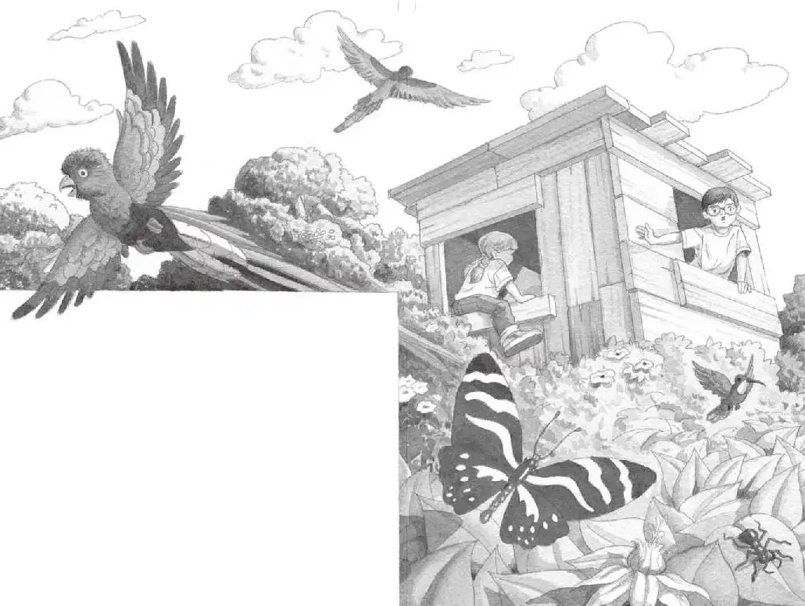

杰克睁开了双眼。
空气又闷热又潮湿。
“我们好像落在灌木丛里了。”安妮说。
安妮透过树屋的窗户往外望。小老鼠从她的口袋里往外望。
杰克也朝树屋外面望去。
窗外，是一片闪亮的绿叶海洋。
那里有鲜花，有五彩缤纷的蝴蝶，还有各种鸟类，就像那本书里画的一样。
“真是太奇怪了，”杰克说，“不知道为什么，我们没有落在一棵树上，以前都是落在树上的。”
“不知道。”安妮说，“我们还是赶紧去给仙女摩根找那样东西吧，那样就能在碰到什么大虫子之前回家了。”
“等一等，似乎有点儿不对劲。”杰克说，“我们为什么会落在灌木丛里呢？最好看看书上怎么说。”
“哦，快走吧。”安妮说，“现在连绳梯都不需要了，我们可以直接从窗口翻出去。”
安妮把小老鼠放进口袋，然后向窗外伸出一条腿。
“等一等！”杰克抓住安妮的另一条腿。他看着书读道：
热带雨林分为四层。最上面一层是露生层，通常距地面至少四十五米。露生层下面是树冠层，枝繁叶茂。树冠层下面是林下叶层，再往下是地面层。
“快回屋里来！”杰克喊道，“我们可能在露生层，离地面至少有四十五米呢！”
“哎呀！”安妮喊了一声，退回到树屋里。
“我们还是从绳梯爬下去吧。”杰克说。他用双手和双膝着地，拨开盖在地板洞口上的落叶，往下看去。
绳梯似乎垂落在参天大树的树枝中间，再往下杰克就看不见了。
“我看不清那下面是什么。”他说，“我们千万要小心啊。”
杰克把热带雨林书塞进背包，然后把脚踩在了绳梯上。

他开始往下爬，安妮跟在后面，小老鼠藏在安妮的口袋里。
杰克拨开密密的树叶。
他来到了树冠层下面的林下叶层。
他低头往下看，地面离这儿是多么遥远啊。
“哦，天哪。”杰克轻声说了一句。
这里跟在树冠层上面看到的景象完全不一样。
阳光不见了，四下里一片寂静。空气虽然还很潮湿，但感觉比刚才凉爽了一些。
杰克忍不住颤抖了一下。他还从没见过这么阴森恐怖的地方呢。